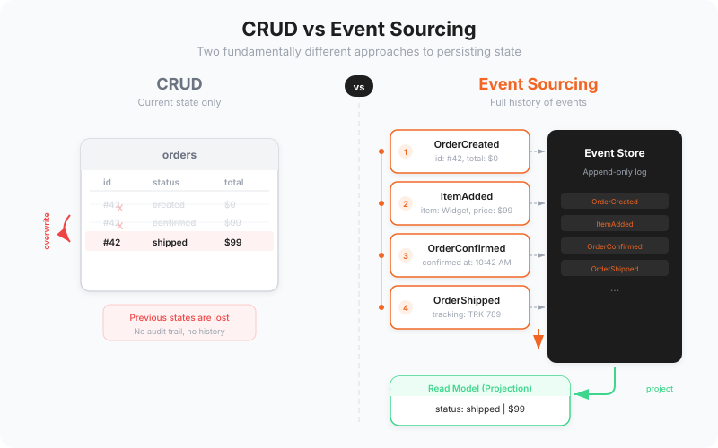

Every traditional database application does the same thing: it stores the current state of the world. When something changes, it overwrites the old value with the new one. A customer updates their address, and the old address vanishes. An order status moves from "processing" to "shipped," and the fact that it was ever "processing" is gone. An account balance changes from 1,000 to 750, and the reason why is lost to the void.
We have been building software this way for decades, and we have accepted the data loss as normal. It is not normal. It is a design choice, and it is a bad one. We are throwing away information that has enormous value, and most teams do not even realize it until they desperately need data that no longer exists.
Event sourcing takes a fundamentally different approach. Instead of storing the current state, it stores every change that has ever occurred. Instead of overwriting, it appends. Instead of a snapshot, it keeps the complete history. And this changes everything.
The Problem with CRUD
The traditional Create-Read-Update-Delete model seems intuitive. You have data, you modify it, you save it. But consider what you lose with every update.
A customer's order is modified three times before shipment. With CRUD, you have only the final version. Why was it changed? Who changed it? What was it before? Unless you have built a separate audit logging system (and most teams have not, or the logging is incomplete), this information is gone.
A pricing error causes a product to be sold at the wrong price for two hours. With CRUD, you can see the current price, but reconstructing exactly which orders were affected requires forensic investigation of whatever logs happen to exist.
A compliance audit asks you to demonstrate the complete history of changes to a customer's personal data, including who accessed it and when. With CRUD, you cannot. The data has been overwritten, and the history is not recorded in the application's primary data store.
These are not edge cases. These are the kinds of questions that businesses need answered every day. And CRUD makes answering them somewhere between difficult and impossible.
How Event Sourcing Works
Event sourcing replaces the mutable state with an immutable sequence of events. Instead of storing "Account balance: 750," you store the events that led to that balance:
- AccountOpened: initial balance 0
- FundsDeposited: amount 1,000
- PurchaseMade: amount 200, merchant "Office Supplies Co"
- FundsDeposited: amount 500
- SubscriptionCharged: amount 50, service "Cloud Hosting"
- RefundReceived: amount 200, reason "Returned item"
- TransferSent: amount 700, recipient "Supplier Account"
The current balance of 750 is not stored anywhere. It is calculated by replaying the events from the beginning. This might sound inefficient, and at scale it would be, which is why event sourcing uses a complementary concept: projections.
The Event Store
The event store is the heart of an event-sourced system. It is an append-only log of events, organized into streams. Events are never modified or deleted. They are facts: things that happened. You cannot un-happen something.
This append-only nature gives the event store remarkable properties. It is inherently thread-safe for writes (appending to a log has no conflicts). It provides a natural audit trail without any additional infrastructure. It is straightforward to replicate and back up. And because events are immutable, caching is trivial: once written, an event never changes.
Modern event stores like the open source Sliceworkz Event Store are purpose-built for this pattern, offering features like subscriptions (getting notified when new events are written), projections (transforming events into read models), and global ordering (knowing the exact sequence of all events across all streams).
Projections and Read Models
If events are the source of truth, projections are how you make that truth useful. A projection is a process that reads events and builds a data structure optimized for a specific use case.
Need a dashboard showing total revenue by month? Build a projection that processes "PurchaseCompleted" events and maintains monthly totals. Need a customer detail page? Build a projection that tracks "CustomerRegistered," "AddressUpdated," and "OrderPlaced" events to maintain a current customer view. Need a fraud detection system? Build a projection that watches for suspicious patterns across payment events.
The beauty of projections is that you can create new ones at any time, and they automatically process all historical events. Imagine your business decides it needs a report that nobody thought of when the system was built. With CRUD, you are out of luck: the data was overwritten. With event sourcing, you write a new projection, run it against your entire event history, and the report is populated with data going back to day one.
"With event sourcing, you can answer questions today that you did not even think to ask when the system was built. The data is there, waiting for the right question."
Temporal Queries: Time Travel for Your Data
Because you have the complete history of every change, you can reconstruct the state of your system at any point in time. What did the customer's account look like last Tuesday at 3pm? Replay events up to that timestamp, and you have your answer.
This capability is invaluable for debugging. When a user reports that something "was wrong yesterday but seems fine now," you do not need to guess what happened. You can reconstruct the exact state they saw, identify the events that led to it, and understand precisely what changed.
It is equally valuable for compliance. Regulations like GDPR require you to demonstrate what data you held about a person at specific points in time. Event sourcing makes this straightforward. Financial regulations require complete audit trails. Event sourcing provides them by default.
Benefits Beyond the Obvious
The immediate benefits of event sourcing, audit trails, temporal queries, and the ability to build new read models, are compelling enough. But there are subtler benefits that emerge over time.
- Debugging becomes archaeological. When something goes wrong, you have the complete chain of events that led to the problem. You do not need to reproduce the issue. You do not need to guess at state transitions. The evidence is right there in the event stream.
- Integration becomes natural. From your internal domain events, it is easy to produce an outside-world purposed event stream that other systems can subscribe to. This is essentially an event-driven architecture (EDA): no polling, no batch jobs, no integration databases. External consumers react to changes in real time, decoupled from your internal domain model.
- Testing becomes specification-based. You can write tests that say "given these events occurred, when this command is executed, then these new events should be produced." The tests read like business specifications, and they verify behaviour without depending on infrastructure.
- Business insights multiply. Data analysts can work directly with event streams to discover patterns that would be invisible in a CRUD database. Customer behaviour, system usage patterns, conversion funnels: all of this is embedded in the events, waiting to be discovered.
When to Use Event Sourcing
Event sourcing is not appropriate for every part of every system. It adds complexity, and that complexity must be justified by the business value it provides.
Event sourcing excels in domains where:
- The complete history of changes has business value (financial systems, healthcare, legal, logistics)
- Audit and compliance requirements are strict
- Business processes are complex and involve multiple steps over time
- The ability to derive new insights from historical data is important
- Multiple systems need to react to changes in real time
It is less compelling for simple CRUD applications, content management systems, or systems where the current state is the only state that matters and history has no business value.
In practice, most non-trivial systems benefit from event sourcing in their core domain, even if supporting domains use traditional state-based persistence. This selective application, informed by domain-driven design principles, gives you the benefits of event sourcing where they matter most without imposing unnecessary complexity where they do not.
Common Misconceptions
Several misconceptions prevent teams from adopting event sourcing where it would provide significant value.
"It is too slow." For writes, event sourcing is actually faster than traditional databases because appending to a log is cheaper than updating indexed tables. For reads, projections provide pre-computed views that are as fast as any database query. The replay process, used for building new projections, runs offline and does not affect system performance.
"It uses too much storage." Events are typically small, and storage is cheap. Most event-sourced systems store years of history in gigabytes, not terabytes. And unlike traditional databases, you never need to vacuum or compact.
"It is too complex." The core pattern is remarkably simple: append events, read events, build views. The complexity comes from the surrounding ecosystem, but that complexity exists in traditional systems too. It is just hidden behind ad-hoc audit tables, change data capture systems, and integration middleware.
Event sourcing does not add complexity. It makes existing complexity visible and manageable. The data loss in CRUD is not simplicity. It is hidden cost. Event sourcing makes you pay that cost upfront, in a controlled way, rather than discovering it when your business needs data that has already been destroyed.